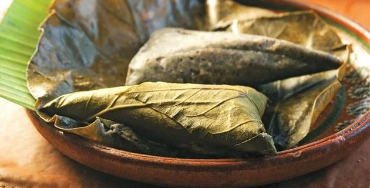
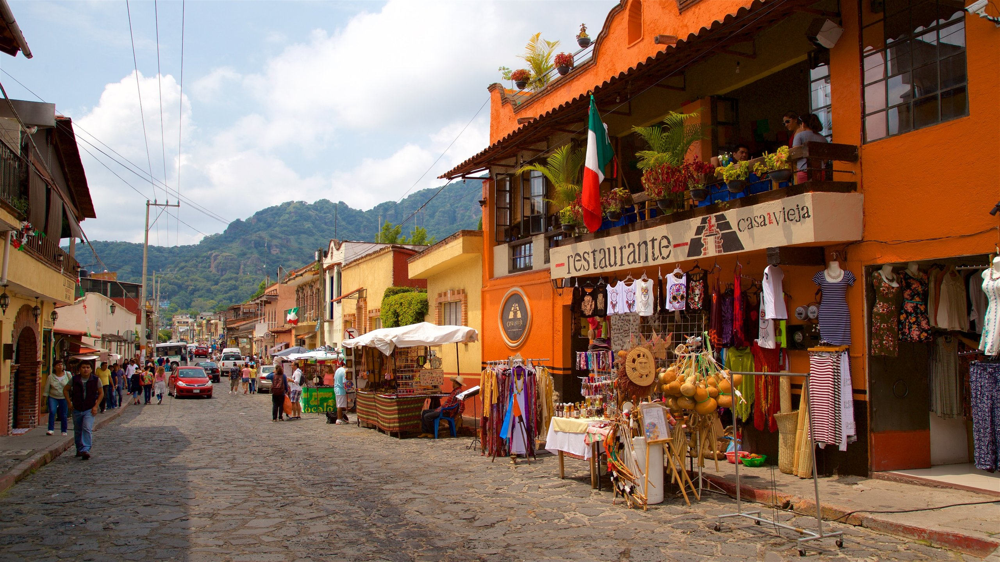

La comida ritual y festiva ocupa un lugar preponderante en la cocina morelense, como los xocotamales, que se preparan a base de maíz azul y habas, la cola de res entomatada, cecina, pato en pipián, manitas de puerco, hongos con chilaca, moronga o pozoles.

Se dice que Tepoztécatl nació de una princesa cuyo embarazo fue producto del amor de un pajarillo, conoce la Leyenda del Tepozteco: Hace tiempo un grupo de los tlahuicas emigró más allá de las fronteras del Valle de México hasta llegar a establecerse a lo que hoy conocemos como Tepoztlán.

Notas relevantes:
Morelos se fundó en el año de 1869
por el
entonces presidente Benito Juárez.
En Morelos existen 18 ríos, 1 lago
y
2 lagunas.
21.5°C es la temperatura media anual de Morelos.
En Cuernavaca vivieron
personalidades
como
Hernán Cortés, Erich Fromm, Siqueiros y Maximiliano de
Habsburgo.
Antes de fundarse el estado de
Morelos, los
distritos de Cuernavaca, Cuautla, Jonacatepec, Tetecala y
Yautepec
pertenecían al Estado de México.
El estado de Morelos es una de las
entidades más bellas de todo México, y dentro de este
territorio habitan un sinfín de historias, flora y fauna, así como alrededor de 2 millones de personas.